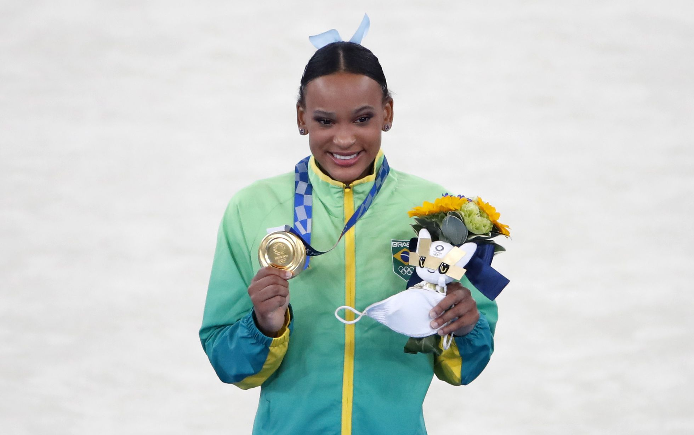
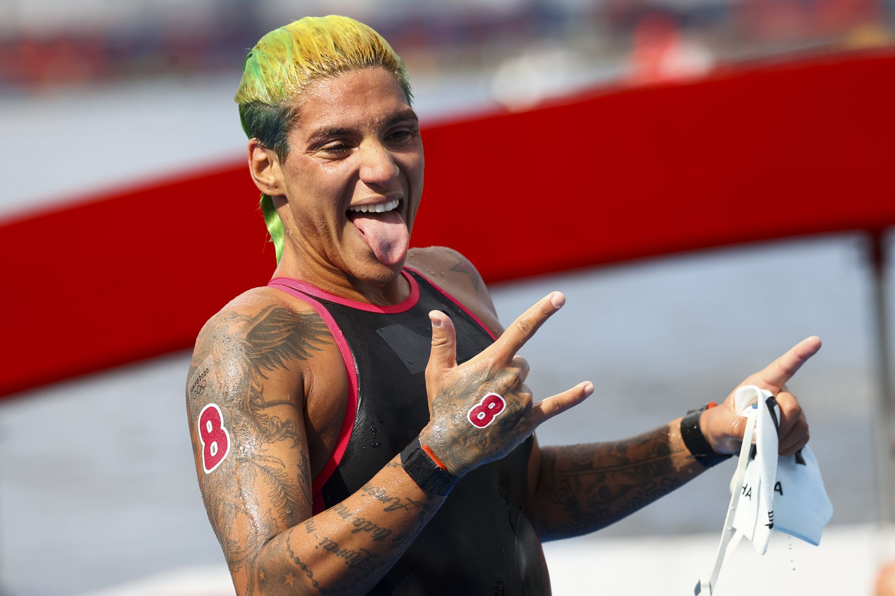
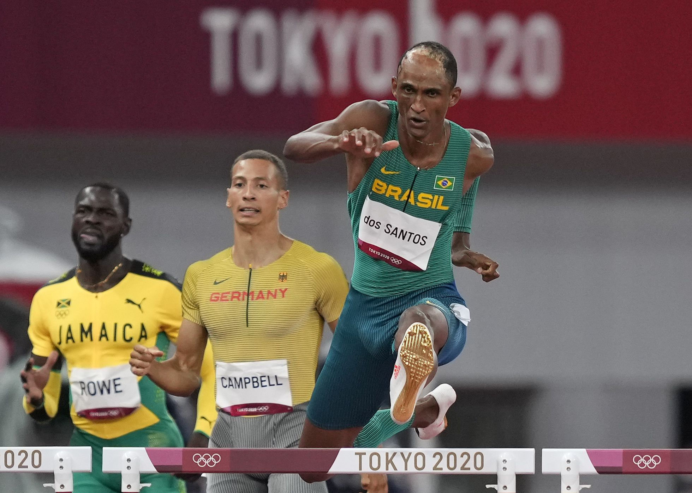

Quadro de medalhas Olímpicas do Brasil
O desempenho do Brasil nas Olimpíadas de Tóquio 2020 foi considerado o melhor da história. O quadro de medalhas mostrou que o país ficou em 12º lugar na competição, um acima do que nas Olimpíadas do Rio de Janeiro, em 2016. No total, o Brasil ganhou 21 de medalhas em 13 modalidades.
Ginástica Artística
Rebeca Andrade, medalhas de ouro e prata na ginástica artística - A ginasta brasileira já tinha feito história ao garantir ao Brasil a inédita medalha da equipe feminina na ginástica artística, na sexta-feira, 30 de julho. Aos 22 anos, a esportista de Guarulhos, na Grande São Paulo, levou o país ao pódio após um desempenho hercúleo no tablado e uma performance embalada ao som de Baile de favela. Mas no domingo, 1 de agosto, Rebeca superou a si mesma e consagrou-se como a primeira campeã olímpica do Brasil na modalidade, após terminar a prova de salto em primeiro lugar. A medalha de ouro de Rebeca Andrade nesta competição pode não ser a última, já que a ginasta disputa mais uma final nesta segunda-feira, com chances reais de medalha na prova de solo feminino. “Todos sabem da minha trajetória, o que eu passei. Acho que mesmo se eu não tivesse ganhado a medalha, eu teria feito história, justamente pelo meu processo para chegar até aqui. Não desistam, acreditem no sonho de vocês e sigam firmes.”
Maratona Aquática
Ana Marcela Cunha, medalha de ouro na maratona aquática - Um dos principais nomes da maratona aquática da história da categoria, a brasileira de 29 anos já possuía vários títulos mundiais. Mas faltava uma medalha olímpica em seu currículo de atleta. Ela estreou numa Olimpíada em Pequim 2008, com apenas 16 anos, mas acabou ficando de fora da Londres 2012. Na Rio 2016 era a favorita, mas acabou chegando em décimo lugar por causa de um problema de saúde. Agora foi diferente. “É um quarto ciclo olímpico vindo de uma frustração no Rio e um amadurecimento muito grande para chegar até aqui”, explicou. Nascida em Salvador, a atleta é filha de pai nadador e mãe ginasta e começou a nadar aos dois anos.
400 metros com barreiras
Alison dos Santos, o “Piu”, medalha de bronze nos 400 metros com barreiras - Pela primeira vez, o Brasil tem um medalhista olímpico na prova de 400 metros rasos com barreira. E ele só tem 21 anos. O pódio representa a chegada da fama para um menino tímido. Quando tinha 10 meses de idade, Alison sofreu um acidente com uma panela de óleo quente e teve sérias queimaduras na cabeça. Ele começou como judoca na infância, mas logo chamou a atenção pelo porte físico —1,85m aos 14 anos de idade, 2,00m aos 21— e foi convidado para o atletismo por professores de um projeto social do Instituto Edson Luciano Ribeiro em visita a escolas da cidade. Na primeira oportunidade, recusou por conta da timidez. Demorou alguns meses para aceitar o convite e, ainda assim, com certa cautela. Mas depois não parou mais de correr. “Eu não estou aqui só por mim, eu corro por outras pessoas também”, afirmou em entrevista depois da prova, citando seu treinador e sua família. “Essa medalha não é só minha, é nossa, é do Brasil”, concluiu.
